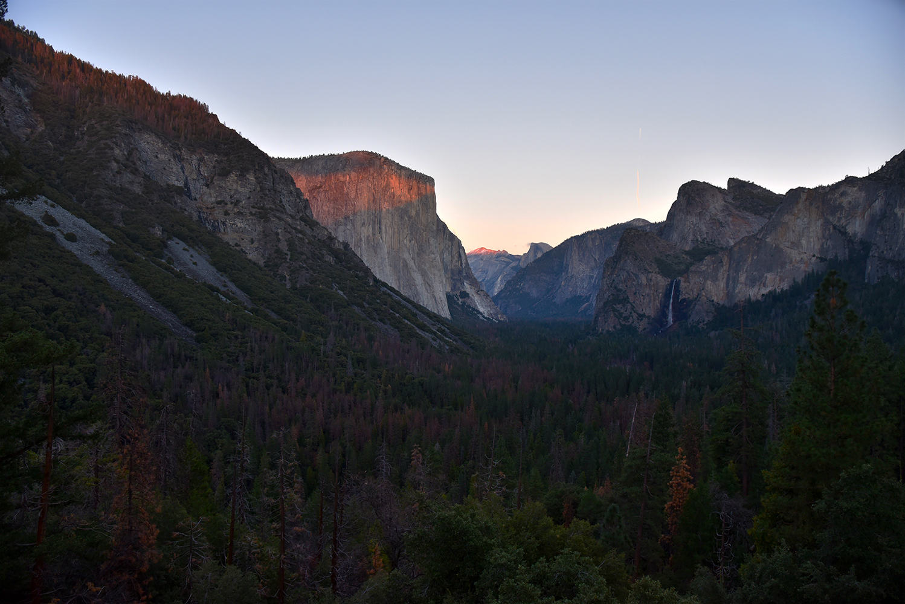

lydiaslens

"Last Glow"
You know the Mac wallpaper you've been admiring for the past five years every single time you walk into the computer lab? Well this picture was taken in that wallpaper's honor.
At first glance, Yosemite Valley looks beautiful. Beneath it's beauty, is hurt. The valley used to be covered in 80% meadow 20% forest, not the other way around. All that pretty color you see in the trees are dead trees. There is no denying that humankind is a big factor behind these changes in the natural course of nature.
January 3, 2018